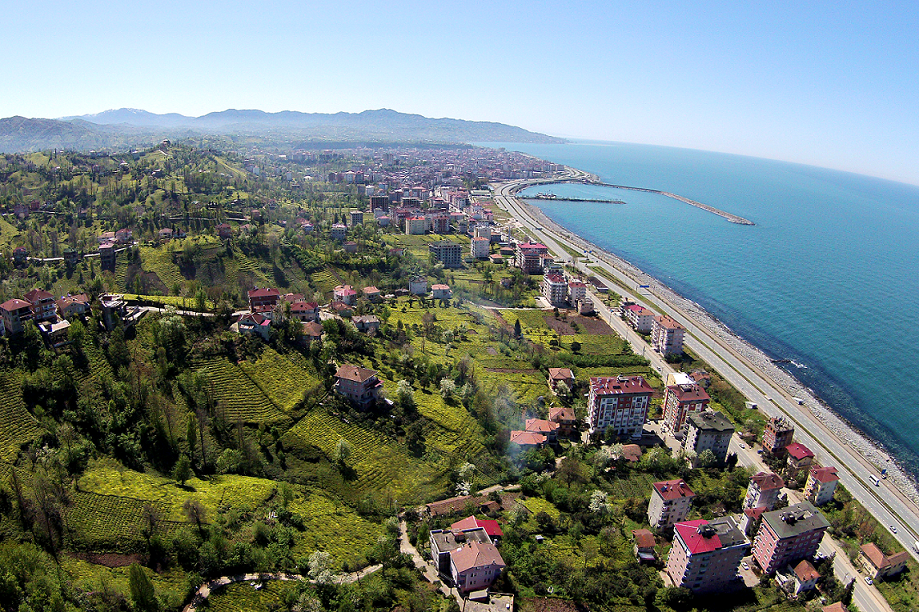

Ardeşen,Rize'nin il merkezine 45 km mesafede bir ilçesidir. 743 km² yüz ölçümüne sahip ilçe, 1 belde, 42 köy ve yedisi Tunca Beldesi'ne bağlı 28 mahalleden oluşmaktadır. Doğusunda Fındıklı, batısında Pazar, güneyinde Altıparmak Dağları ve kuzeyinde Karadeniz ile çevrilmiş olup, kıyı uzunluğu 10 km'dir.
Genel olarak ılıman, dört mevsim yağışlı bir iklime sahip olan ilçenin ortalama sıcaklığı 15 derece civarındadır. İç kısımlarına gidildikçe iklimin biraz daha sertleşmektedir.
Ardeşen'in sarp ve engebeli arazisinin neredeyse dörtte biri ormanlık alandır. %10 civarındaki tarıma elverişli arazisinde yetiştirilen başlıca tarım ürünü çaydır. Çay dışında yetişen fındık, kivi, mısır gibi ürünler çoğunlukla ilçe içerisinde tüketilmektedir. İlçede yapılan hayvancılığın da bu faaliyetle uğraşan ailelerin ihtiyacına yönelik olduğu söylenebilir.
İlçede süregelen silah üretimini yasal bir çerçeveye oturtmak amacıyla 1993 yılında kurulan ASİLSAN, Türkiye'nin ilk özel silah fabrikası olma özelliği taşımaktadır.
En büyük akarsuyu olan Fırtına Deresi'nde, elverişli pek çok parkur bulunduğundan rafting yapılabilmektedir.
Ardeşen yerleşiminden ilk kez 1846 tarihli bir belgede "Ardaşen" olarak bahsedilmiştir.Ardeşen 1916 ve 1918 yılları arasında Ruslar tarafından yönetilmiştir. Daha önce Pazar'a bağlı olan Ardeşen 1 Mart 1953'te ilçe olmuştur. Ardeşen'de tarihi eser olarak cami, kilise, kemer köprü ve ev örnekleri bulunmaktadır. Ayrıca Seslikaya Köyü'nde bulunan Süleyman Dede (Efendi) Türbesi de (1890) önemli tarihi eserlerdendir.